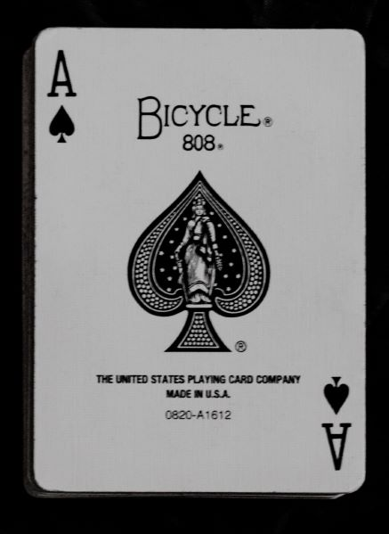
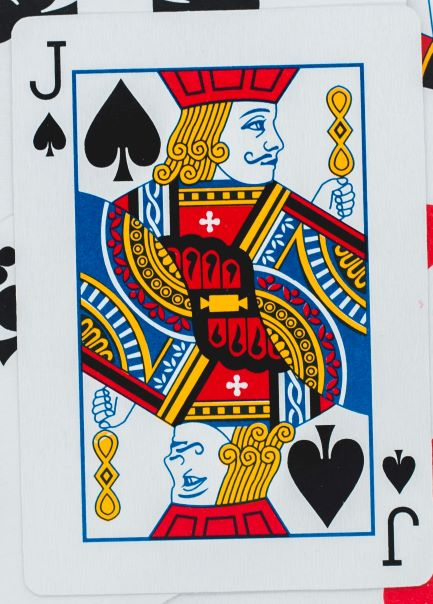
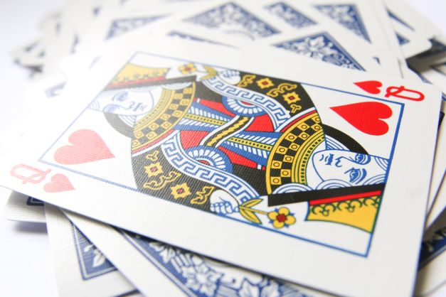

<!DOCTYPE html>
<html lang="en">

<head>
    <meta charset="UTF-8">
    <meta http-equiv="X-UA-Compatible" content="IE=edge">
    <meta name="viewport" content="width=device-width, initial-scale=1.0">
    <!-- Use with Unlinked JS file -->
    <script src=" https://code.jquery.com/jquery-3.6.0.min.js"></script>
    <link rel="stylesheet" href="./assets/css/style.css">
    <title>jQuery Playground - Things</title>
</head>

<!--  _____
     |A .  |
     | / \ |
     |( . )|
     |  T  |
     ---"--- 
      מְפַקֵד  -->

<body>
   
    </div>
    <footer>

        <button type="button" class="nav">
            <h2>jQUERY<br>SELECTORS</h2>
            <a href="./index.html" target="_blank">
            
        </button>
        
        <button type="button" class="nav">
            <h2>jQUERY<br>EVENTS</h2>
            <a href="./events.html" target="_blank">
            
        </button>

        <button type="button" class="nav">
            <h2>jQUERY<br>STUFF</h2>
            <a href="./stuff.html" target="_blank">
            
        </button>

        <button type="button" class="nav">
            <h2>jQUERY<br>THINGS</h2>
            <a href="./things.html" target="_blank">
            
        </button>
    </footer>

    <!-- Use with Linked JS file -->
    <!-- <script src=" https://code.jquery.com/jquery-3.6.0.min.js"></script> -->
    <!-- <script src="./assets/js/script.js"></script> -->

    <!-- Use with Unlinked JS file -->
<script>

</script>
</body>

</html>